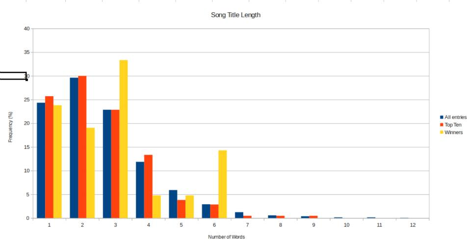

Song Title Length
So we continue with the fun little statistics. Shown here is the distribution of the length of song titles in the hottest 100 (with data now going back to the start in 1993!). Blue is all entries, and orange is just the top ten. As you can see, they are very close to each other, and there’s no real discrepancy. The yellow is just the #1 songs of each year.
You can see there is a disproportionate number of six-word-titled songs. Is this just a fluke (there are only 21 #1 songs after all)? Well, 2.9% of songs are six-worders, but that yellow bar represents 3/21 #1 songs. The odds of getting 3 or more six-worders is just 2.2% Louis Bhim can we call this a P-vlaue if we aren’t doing means testing against a normal dist?), which is low and so makes it less likely to be a fluke (the reasoning being if something had a low chance of occurring by luck, but actually happened, then it is likely that something other than chance caused it). However, it seems absurd to think that somehow six-worders are more catchy than otherwise named songs.
The obvious explanation is that we calculated the odds of six-worders occurring, but our method was actually to plot the data and look for something interesting. The odds of finding “something interesting” (for example, a spike in 4,5,6,7,8 or 9 worders, an absence of some length, etc) were much higher and therefore less impressive and convincing. The dangers of not stating a hypothesis before beginning a data analysis!
